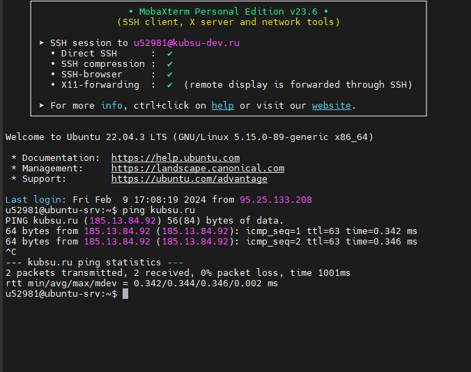
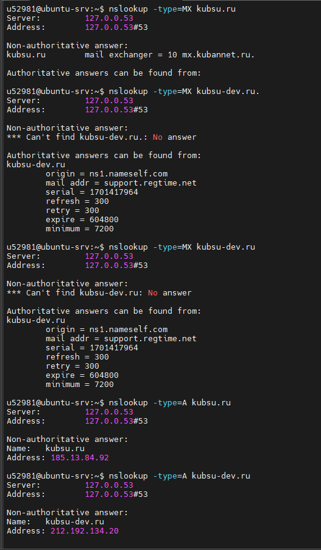
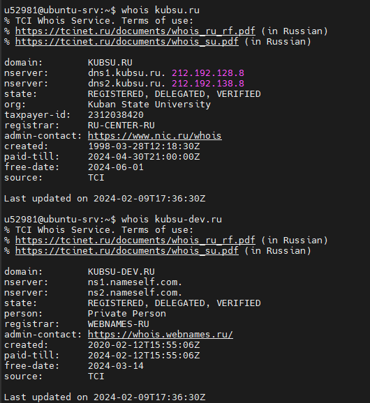
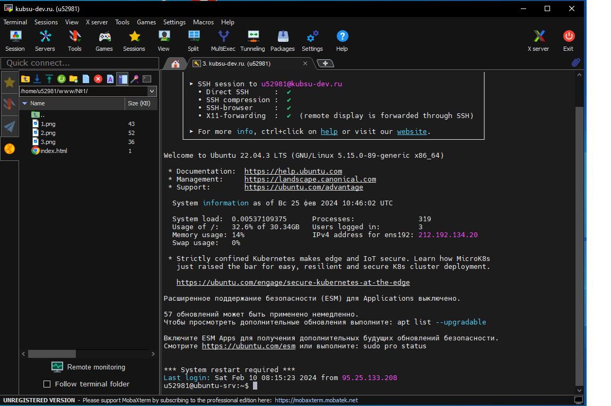
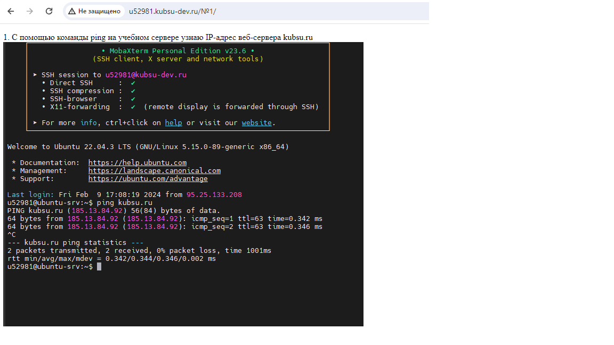

1. С помощью команды ping на учебном сервере узнаю IP-адрес веб-сервера kubsu.ru

2. С помощью команды nslookup узнаю A-записи и MX-записи домена kubsu.ru и kubsu-dev.ru

3. С помощью команды whois узнаю дату регистрации домена kubsu.ru и kubsu-dev.ru

4. связался с сервером и скопировал файлы на компьютер

5. просто так
